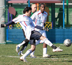
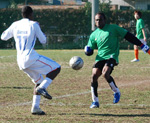
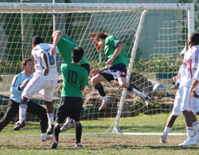
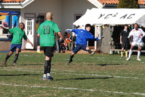

|
YC&AC, Sunday 16th December,
A cold, windy, and bumpy pitch was the ground for a game that saw 8 goals last season in a 4-4 draw in which Zion scored 2 late goals in the last 2 minutes.
Lions were determined to keep their good form going, and to ensure a repeat of last season does not occur.
Lions were forced to make 3 changes, with Sima away, Raoof slotted into a central role for the back 4, and with the solid Baghir in midfield injured, Mohammed ElSheikh, usually a right-back, played in an unorthodox midfield role. The influential Zuhair upfront could not shake off an ankle injury, and was replaced with Ahmed Gaafar, the young striker who was also struggling with a groin strain.

The game was tight for 30 minutes, but when Mohammed ElSheikh unleashed a beautiful curler with the outside of his foot from the right corner edge of the box into the bottom far left corner, Lions went 1-0 up.
First half ended 1-0, and in the second half, a couple of rough tackles from Zion defenders, including a knee to Lions striker Ken, saw the play continue to Lion's advantage (all credit to good refereeing decision by Jorge), eventually the ball falls to Ken who got up again, and managed to get the ball off 1 or 2 defenders, and as the keeper rushed out, Ken crossed the ball across to Ahmed who finished the ball in style with a magnificent scissor kick into the gaping net to make it 2-0.

AbuBakr Birkia was always a threat, and his dribbling invited a couple of rash tackles that earned the Zion defender a booking before Ken outpaced the defence and slotted home the third for Lions, and his 5th of the season.
Zion pressed, and a couple of dangerous corners, and a cross creeping at the far post, were no test for the talents of Lion's keeper Orlando Torres.
Zion's sharp striker Benji, was kept at bay, but one half chance saw him turn on a six-pence 6 yards out and place a beautiful shot into the top corner, but to his amazement, Orlando flew up and held a ball that would've probably ended up in the back of the net had it been any other good keeper, but not Orlando!

With just over 10 minutes to go, AbuBakr was across on the right side, and as he dashed into the box, a clumsy tackle from a repeat offender, saw him get his second yellow card and marching orders, as the referee pointed to the spot.
AbuBakr took the penalty, slotted beautifully, and put the memories of a penalty miss against Dutch Embassy behind him.
In general, the game was more physical than flowing, and although Lions would've wanted to play better, but with the injuries and pitch condition, Lions were happy to keep yet another clean sheet and score a few good goals.
AbuBakr Birkia, Ahmed Gaafar, and Ken Hersche, all played magnificently, but AbuBakr's dribbling skills on such a bad pitch, must earn him Man of the Match.
Report by Hussein Shehata
|